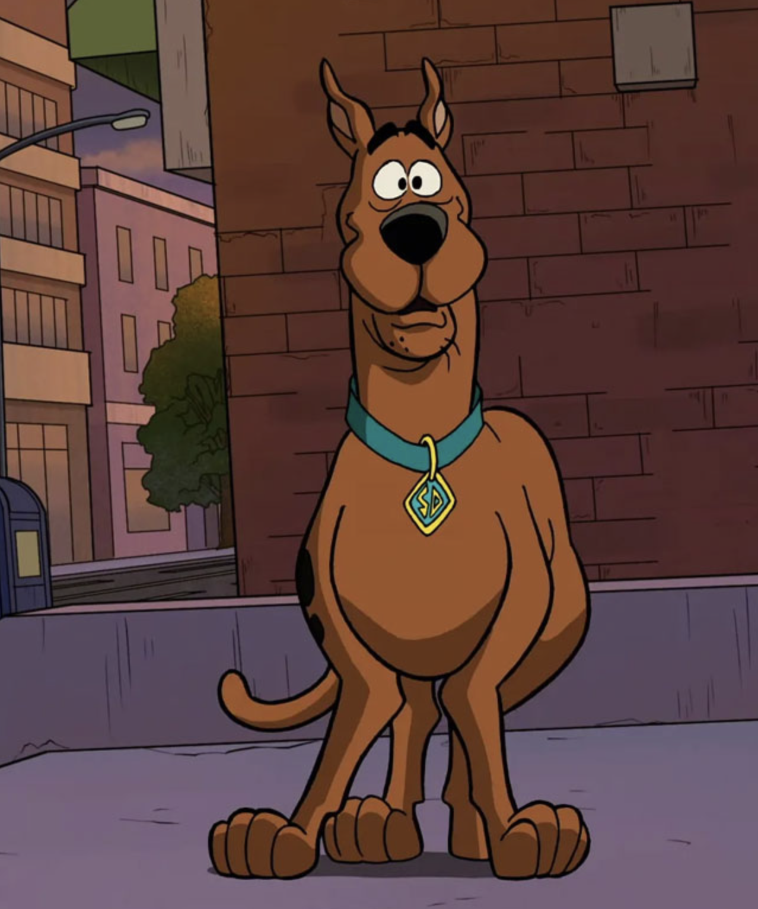
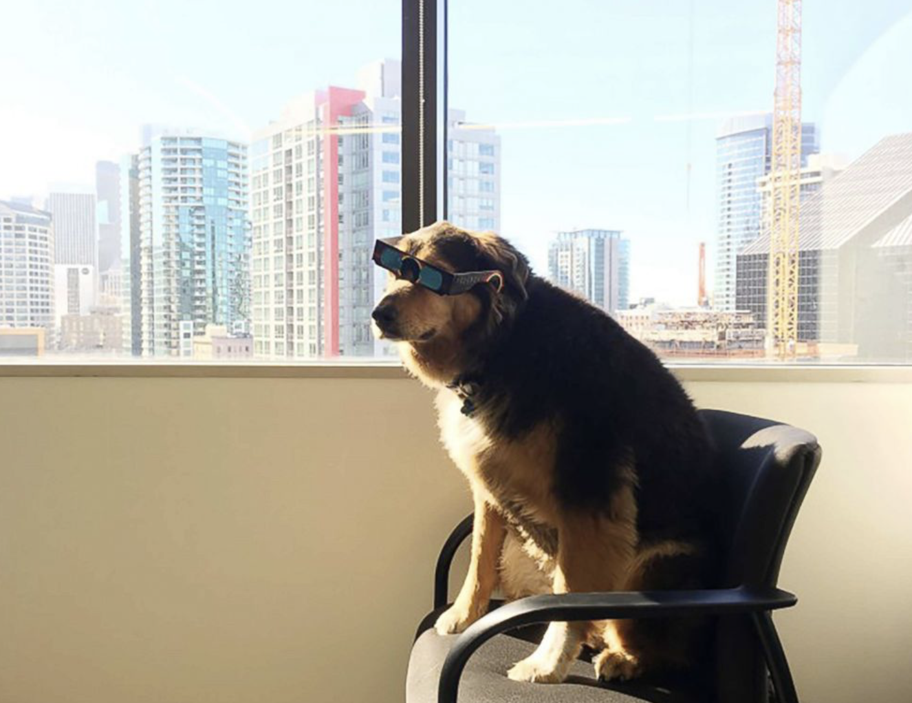
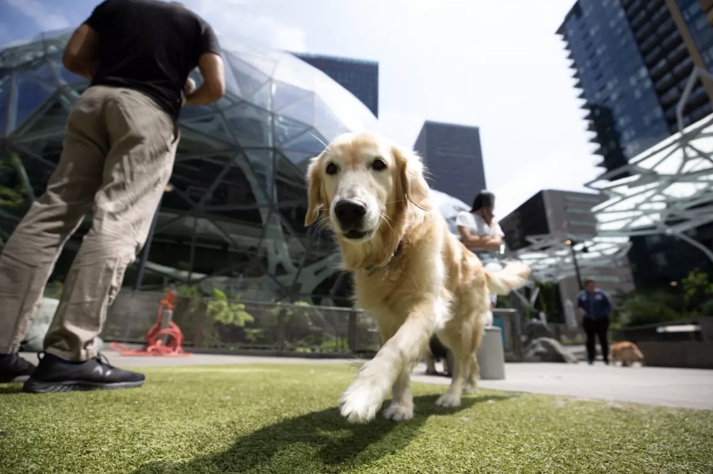
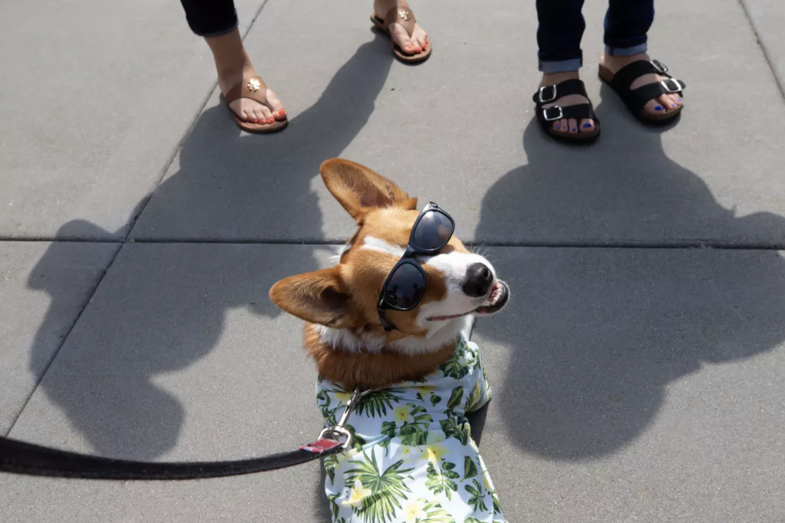

🌟 Available Pets for Adoption
Meet our wonderful animals currently looking for their forever homes! Each adorable furry friend has been examined by our veterinary team, showered with love, and is ready to bring joy to your family. Get ready to fall in love! ❤️
🐕 Featured Dogs - Ready for Adventure!

Cool Scooby 🦴 - "Ruh-roh, I need a home!" This mystery-solving superstar is a 3-year-old mixed breed who's always ready for an adventure. Scooby loves treats (especially Scooby Snacks!), playing detective in the backyard, and being the center of attention. He's goofy, loyal, and promises to make every day an exciting mystery!

Cool Boy 😎 - The coolest pup in town! This 2-year-old charmer has style, swagger, and a heart of gold. Cool Boy is chill, loves hanging out with his humans, enjoys skateboard rides (seriously!), and is always down for a treat. He's house-trained, well-behaved, and guaranteed to make you the coolest pet parent on the block!
� More Amazing Dogs!

My Furrr 💖 - "Woof means I love you!" This ultra-fluffy 1-year-old ball of fur is a professional snuggler and certified cuteness expert. My Furrr enjoys long naps in cozy beds, chasing tennis balls like a champion, and demanding belly rubs at all times. Warning: May cause excessive smiling and uncontrollable "awww" sounds!

My Glass 🤓 - The intellectual canine! This sophisticated 4-year-old dog is clearly smarter than your average pup. My Glass loves learning new tricks, solving puzzle toys, going on discovery walks, and looking super stylish. Perfect for active families who appreciate a clever, well-behaved companion!
Adoption Statistics
| Year | Dogs Adopted | Puppies Adopted | Special Needs | Total |
|---|---|---|---|---|
| 2023 | 287 | 158 | 42 | 487 |
| 2024 | 312 | 175 | 51 | 538 |
| 2025 | 298 | 163 | 47 | 508 |
| 3-Year Total Dogs Adopted | 1,533 | |||